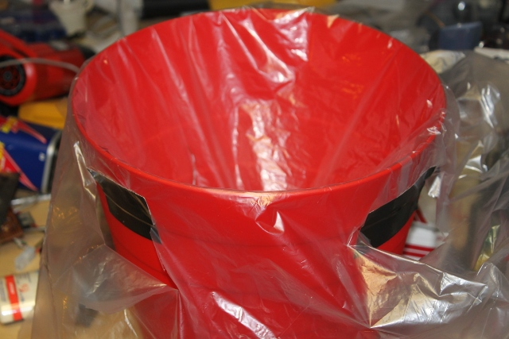
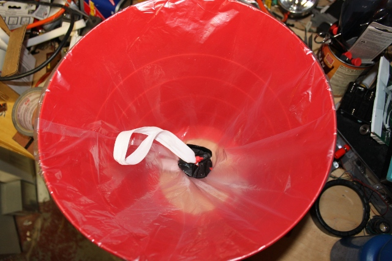

Our family was at the Liberty Science Center a few weeks ago and they were setting AirZookas. These are “air cannons”; they shoot a ball of air at a target/person/butterfly and hilarity ensues with a healthy running start. I must say that they are very accurate; there was a guy at the LSC store whose job, apparently, was to snipe passersby, presumably to entice them into the store. I can't imagine this working as well for something like McDonalds (“upon being struck on the head by a Quarter Pounder, I desired nothing more than to purchase same”), nonetheless I was one of the passersby and was quite impressed with both the capability and the price, which was an unhealthy twenty dollars.
On the following day we found ourselves at Ikea, whose numerous delights include a red plastic FNISS (“FNISS – the name you can trust”) wastebasket for $1.99. Wheels turned, lightbulbs (fluorescent of course) lit, and two dollars was produced.
And away we go.
1 FNISS waste paper basket. I imagine other brands will work (not as well of course).
Knit elastic strip, 60% polyester 40% rubber, found in chemists/pharmacies/supermarkets and sewing supply stores (does such a thing still exist?). About 3 feet long, 3/4” wide.
Several tie wraps
Duct tape
A large plastic bag, like a leaf or trash bag. Garbage bags are too thin and get torn up quickly.
Some thin string or a piece or wire.
Razor blade or scissors
Dremel tool or similar with a milling bit to cut out the circle in the bottom of the wastebasket.
A drill with roughly 1/4” drill bit (not at all critical).
Metal cutting shears, jigsaw or a something else that'll cut thick plastic.
Draw a circle on the bottom of the basket (on the outside) a bit bigger than a CD, centered in the middle, and cut it out. Ideally this is where your Dremel and milling but would come in but you could also drill holes around the outline and cut them with a small blade. The edges remaining need to be reasonably smooth. Cut out the plastic in a single piece – we'll need it shortly.
Drill two sets of holes on opposite sides of the bottom; one hole on the bottom and one on the side, as shown. Thread tie wraps through the holes but don't close them up just yet.
Tie a knot at each end of the elastic. Thread the tie wrap through the knot and close the tie wrap.
Now we need to find the midpoint of the elastic. If you can't figure out how to do that by yourself, then stop reading and go buy an AirZooka. Grab a short piece of wire and twist it around the elastic at the midpoint. This is our leader for threading through the washers.
I cut the washers out of the piece of plastic I cut out of the bottom of the wastebasket although pretty much anything that size will do. It'll need to be fairly strong though. I covered mine in duct tape so the edges don't cut the plastic bag.
This is the diaphragm of the air cannon and will have to stand up to the abuse of repeated shots. Garbage bags and regular shopping bags are too flimsy. I used a drum liner bag I had in the garage, but a leaf bag or medium duty trash bag works fine also.
Cut an area of the bag big enough to cover the top of the wastebasket even when the middle is pushed down almost to the bottom. Mark the middle, cover it in duct tape on both sides and then poke a hole through it. Then you can thread the elastic through the first washer, that plastic and the second washer.
Here's where you have to be careful that the middle of the bag is in the middle of the wastebasket, otherwise the elastic will pull to one side when you fire the cannon and it won't be as effective as it otherwise would be.
Pull the elastic and let it go gently. When the elastic stops pulling that's where you want the bottom of the bag to be, so move the washers and plastic to place it in the correct position. Tug the edge of the plastic gently so that the tension around the washers is uniform all around the rim of the wastebasket. Now cut a slit in the plastic below the outside of the rim and put a strip of duct tape on to hold it in place. Do the same on the direct opposite side of the wastebasket and then between those two positions on either side:
Then just slit the plastic in between where you've taped and tape the rest. Push the washers up against the bottom of the bag and put a tie wrap under the bottom washer and above the top washer.

You, my friend, are now a force to be
reckoned with.
Shoot it sort of like a bow and arrow. You can look through the plastic and pull the elastic bag as straight as you can.
It was about $6 to make and it's a
great weekend project. It's not as accurate as the AirZooka, which I
think is because the wastebasket might be too long for the diameter
of the diaphragm. I'd like to look into this further to improve its
performance. According to some very brief research I did it's
actually shooting out a torus of air which , if you get it right,
maintains its shape and strength over quite a distance. I'd like to
put in a smoke machine so you can see the torus and tweak the air
cannon.